<style>
    /* 基础样式：沉浸式阅读体验 */
    body { 
        font-family: -apple-system, BlinkMacSystemFont, "Segoe UI", Roboto, "Helvetica Neue", Arial, sans-serif; 
        line-height: 1.8; 
        color: #2c3e50;
        max-width: 900px; 
        margin: 0 auto; 
        padding: 40px 20px; 
        background-color: #fff;
    }

    /* 章节单元 */
    .chapter-unit { margin-bottom: 80px; }

    /* 标题体系 */
    h1 { 
        font-size: 2.8em; 
        color: #e67e22; 
        border-bottom: 4px solid #d35400; 
        padding-bottom: 20px; 
        margin-top: 0; 
        margin-bottom: 40px;
    }
    
    h2 { 
        font-size: 1.8em; 
        color: #c0392b; 
        margin-top: 50px; 
        padding-left: 15px;
        border-left: 5px solid #e74c3c;
    }
    
    h3 { 
        font-size: 1.4em; 
        color: #8e44ad; 
        margin-top: 35px; 
        font-weight: 600; 
    }
    
    /* 正文 */
    p { margin-bottom: 1.5em; text-align: justify; text-justify: inter-ideograph; font-size: 1.05em; }
    strong { color: #e74c3c; font-weight: 700; }
    em { color: #2980b9; font-style: normal; font-weight: 600; }

    /* 侧边栏与特殊盒子 */
    .sidebar { 
        background: #fdf2e9; 
        padding: 25px; 
        border: 1px solid #fae5d3;
        border-radius: 8px; 
        margin: 30px 0; 
        box-shadow: 0 4px 10px rgba(0,0,0,0.03);
    }
    .sidebar h3, .sidebar-title { 
        color: #d35400; 
        margin-top: 0; 
        border-bottom: 2px solid #eb984e; 
        padding-bottom: 10px; 
        margin-bottom: 15px;
        display: block;
        font-weight: bold;
        font-size: 1.2em;
    }

    .learning-goals {
        background: #f4f6f6;
        border-left: 5px solid #16a085;
        border: none;
    }
    .learning-goals .sidebar-title { color: #16a085; border-bottom-color: #a3e4d7; }

    .concept-check {
        background-color: #e8f8f5;
        border: 1px solid #d1f2eb;
        border-left: 5px solid #1abc9c;
        padding: 20px;
        margin: 30px 0;
        border-radius: 4px;
        color: #0e6251;
    }
    .concept-check::before { content: "✅ 概念理解检查"; display: block; font-weight: bold; font-size: 1.1em; margin-bottom: 10px; color: #16a085; }

    .more-precisely {
        background-color: #f9ebea;
        border: 1px solid #f2d7d5;
        border-top: 5px solid #c0392b;
    }
    .more-precisely .sidebar-title { color: #c0392b; border-bottom-color: #e6b0aa; }

    .ultimate-question {
        background-color: #34495e;
        color: #ecf0f1;
        border-radius: 8px;
        padding: 25px;
    }
    .ultimate-question h3 { color: #f1c40f; border-bottom: 1px solid #7f8c8d; }

    /* 图片占位符 */
    .image-placeholder { 
        background: #fcf3cf; 
        border: 2px dashed #f1c40f; 
        display: flex; 
        flex-direction: column;
        align-items: center; 
        justify-content: center;
        margin: 35px auto 15px auto; 
        color: #7f8c8d; 
        font-family: monospace; 
        font-size: 0.9em;
        position: relative;
        overflow: hidden;
    }
    .image-placeholder::before { content: "🖼️ 图像区域 " attr(data-bbox); font-weight: bold; margin-bottom: 5px;}
    
    .caption { 
        font-size: 0.9em; 
        color: #666; 
        text-align: center; 
        margin-bottom: 45px; 
        padding: 0 15px; 
        line-height: 1.5; 
        border-bottom: 1px solid #eee;
        padding-bottom: 15px;
    }
    .caption strong { color: #e67e22; }

    /* 习题区域 */
    .exercises { background: #f9f9f9; padding: 40px; margin-top: 60px; border-top: 4px solid #bdc3c7; }
    .exercises h2 { border-left: none; padding-left: 0; color: #2c3e50; }
    .question-list { padding-left: 20px; }
    .question-list li { margin-bottom: 12px; }

    /* 列表与引用 */
    ul, ol { margin-bottom: 1.5em; padding-left: 25px; }
    li { margin-bottom: 0.8em; }
    sup { font-size: 0.75em; vertical-align: super; }
</style>
<article class="chapter-unit">
<!-- 全页插图占位 -->

<h1>第2章 哥白尼革命：现代科学的诞生</h1>
<div class="intro-block">
<p>在太空时代，我们已经坦然接受了有关我们在宇宙中的位置的现代观点。从太空拍摄的地球照片毫无疑问地说明了地球是圆的，并且也不再有人质疑地球绕太阳公转的观点。然而，不久之前，曾经有那么一段时间，我们的一些祖先认为地球是平坦的，是万物的中心。</p>
<p>我们的宇宙观——和自我认识——从最初开始，经历了重大的改变。地球落得与其他行星一样，人类将它从宇宙中心的宝座上拉下，降级到银河系外围的一个相当微不足道的位置上。但是，我们也没有因失去了优越地位而获得了充分的补偿——我们从中获得了大量的科学知识财富。这一切所讲述的故事便是科学方法的兴起和现代天文学的起源。</p>
</div>
<aside class="sidebar learning-goals">
<span class="sidebar-title">学习目标</span>
<p>本章的学习将使你能够：</p>
<ul>
<li>描述古代文明如何试图用地心宇宙模型来解释星空。</li>
<li>说明行星的视运动如何引发日心太阳系的现代观点。</li>
<li>描述伽利略和开普勒对我们认识太阳系的主要贡献。</li>
<li>陈述开普勒行星运动定律。</li>
<li>说明天文学家如何测量太阳系的真实大小。</li>
<li>陈述牛顿运动定律和万有引力理论，并说明如何用其解释开普勒定律。</li>
<li>说明引力定律为何能让我们测量天体的质量。</li>
</ul>
</aside>
<aside class="sidebar">
<span class="sidebar-title">知识全景</span>
<p>探索是世界上所有科学家所采用的现代科学方法的核心之一。观点必须在本质上通过观测来验证，那些没有通过验证的观点就要被丢弃。这样一来，天文学家才能逐渐产生虽然不是“真理”，但是却越来越接近真实情况的观点。</p>
</aside>
<h2>2.1 古代天文学</h2>
<p>许多古代文明都热衷于不断变幻的夜空。保存到现在的记录和工艺品非常清楚地说明了这一点。但是，和今天不一样，在早期社会里，天文学发展的主要驱动力既不是科学也不是宗教，而是出于非常实用和脚踏实地的原因——海员需要进行导航，农民必须知道什么时候播种。实际地说，人类的生存依赖于对天空的认识。准确预测季节的到来和其他天文事件的能力，毫无疑问是值得高度奖赏或者是严格保密的技能。</p>
<p>在第1章里，我们知道人类的思维能力在认识星空图案时“发明”了星座作为方便标识天球区域的手段（1.3节）。要意识到这些图案在每年的同一时间会回到夜空，这正是用来跟踪季节所必需的实用手段。世界上广泛而分离的文明通过精心打造，至少是构建了某种程度上的原始历法。通常，那些星空秘密的看守者以神话和典礼来遵奉他们的所知，天文观测台址也用于宗教典礼。</p>
<p>也许，最著名的此类地点是坐落在英格兰索尔兹伯里平原上的<strong>巨石阵</strong>，如图2.1所示。这个远古的石头圈阵可以追溯到石器时代，今天是英国最受欢迎的旅游景点之一。研究人员认为它是某种早期的天文台——不是现代意义上的天文台（进行与星空有关的新观测和发现的地方），而是一种三维的日历或年历，使得建造者及其后人能通过特定的天象来判定重要日期。它的建造约从公元前2800年开始，跨越了大约17个世纪。它的增建和维护持续到约公元前1100年，这表明在石器时代和其后的青铜时代，在建造、维护和使用巨石阵的人类中，其重要性得以延续。图2.1所示的最大石块重达50吨，是从许多英里之外的采石场运送而来的。</p>
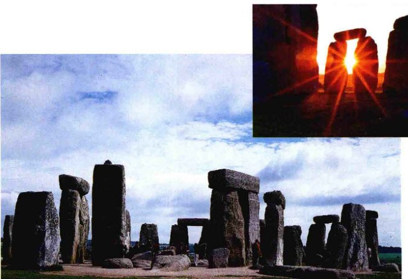
<div class="caption">
<strong>图2.1 巨石阵</strong><br/>
        这个举世瞩目的地点位于英格兰南部，可能是作为原始日历或历法而建造的。插图显示夏至时巨石阵的日出。从石圈的中心看去，在一年中白天最长的这天，太阳径直升上“柱脚石”。[S. 皮特米茨 (S.Pitamitz)/超级素材 (Superstock)；插图 D. 纳努克 (D.Nunuk)/加拿大照片全集 (All Canada Photos)/超级素材 (Superstock)]
    </div>
<p>许多石块排在一起，这样能够指示重要的天文事件。例如，连接内部圆心和所谓的柱脚石的直线与石阵整体的其他部分有一定距离，指向夏至时太阳升起的方向。其他排列与一年中其他时间太阳和月球的出没都有关。巨石阵石块的精确排列（约1度以内）首先在18世纪被注意到，但事实上，直到相当近的时期——20世纪下半叶，科学界才开始相信石器时代的技术有能力完成如此精密的工程壮举。尽管巨石阵的用途仍不确定且存在争议，但遗址可用于天文历法这一点似乎已获公认。巨石阵虽然令人印象深刻、保存完好，但在欧洲各地发现的其他石圈阵，也被认为能够实现类似的功能。</p>
<p>许多北美洲的文明都着迷于星空。怀俄明州的毕葛红医药轮（译者注：怀俄明州的一处古天文台）[见图2.2 (a)]的设计与巨石阵类似——或许，目的也一样——虽然它完成的稍微有些简单。一些研究者认定药轮辐条之间的排列与冬至、夏至、春分和秋分时的日出、日落，以及一些亮星有关，这表明它的建造者——平原印第安人——不仅仅是熟悉夜空的变化。然而，也有其他专家并不认同这一点，他们认为这些排列十分不准确，并一致认为这纯属巧合，药轮更有可能是象征性的，而不是实用性的。类似的争论也围绕着位于著名的玛雅奇琴伊察城的卡拉科尔寺[见图2.2 (b)]展开，该寺于公元1000年左右建造在墨西哥的尤卡坦半岛上。它是否是天文台？如某些人认为的那样，可能与金星出现在早晨或傍晚天空时进行的人祭有关？或者它的窗口的所谓排列仅仅是我们的臆想，寺庙只有宗教用途，而与天文无关？</p>


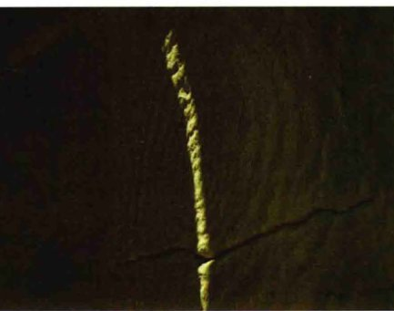
<div class="caption">
<strong>图2.2 美洲的天文台</strong><br/>
        (a) 怀俄明州的毕葛红医药轮，由平原印第安人建造，有辐条和其他可能与太阳及其他恒星出没相匹配的特征。(b) 墨西哥的卡拉科尔寺，由玛雅文明建造，其中有些窗口似乎与天文事件有关，表明卡拉科尔寺至少有部分用途或许与季节记录和星空有关。(c) 夏至正午，太阳光线照在美国西南部查科峡谷的峭壁上，产生细细的光纹和阴影，正好与岩石上的石刻图案对齐——几乎可以肯定是有意为之的天文或农业讯号。[G. 格斯特 (G. Gerster), H. 拉帕西 (H. Lapahie Jr), F1在线数字图像出版公司 (F1 online Digitale Bildagentur)]
    </div>
<p>专家们似乎认同——至少到目前为止——位于新墨西哥查科峡谷的太阳短剑[见图2.2 (c)]是真正的天文日历。它的构建让夏至正午时的细微光线能准确地穿过石刻螺旋的中心。放眼美国西南部，已经发现了许多类似的遗址。</p>
<p>古代中国人也观测星空。其占星学尤其重视“预兆”，如彗星或“客星”——突然出现在天空，然后又慢慢消失的星星，而且他们细致并大量记录了此类天象。20世纪的天文学家仍然借助中国在“黑暗时代”（约从公元5世纪到10世纪）的记录来获得观测数据，当时欧洲的混乱极大地阻碍了西方科学的发展。也许最为著名的客星是出现在公元1054年那颗，在数月内的白天都可见。我们现在知道这样的天象实际上是<strong>超新星</strong>——巨星爆炸，将它的大部分质量散布到太空中去。它留下了在十个世纪后的今天仍然可以探测到的遗迹。中国古代的数据是超新星研究的历史资料的主要来源。</p>
<p>穆斯林世界的天文学家（见图2.3）是古希腊天文学与中世纪欧洲天文学之间的重要纽带。从黑暗时代的深渊到文艺复兴开始的六个世纪里，伊斯兰天文学繁荣发展，保存并丰富了希腊留下的知识。它对现代天文学的影响是不露声色的，但却无处不在。三角测量法中涉及的许多数学方法在伊斯兰天文学家应对实际问题的过程中得以发展，如精确确定圣日的日期或在地球的任何位置给定麦加的方向。天文学名词，诸如天顶、方位角和许多恒星的名字——参宿七 (Rigel)、参宿四 (Betelgeuse) 和织女星 (Vega) ——所有的这些都说明了穆斯林学识的延续。</p>

<div class="caption" style="text-align: left; width: 35%; float: left; clear: left;">
<strong>图2.3 波斯天文学家在工作</strong><br/>
        在黑暗时代，伊斯兰世界的天文学家有许多新发现，许多科学信息被保留下来，如这幅16世纪的手稿中的插图所描绘的一样。[布里奇曼艺术图书馆 (Bridgeman Art Library)]
    </div>
<div style="clear: both;"></div>
<p>天文学不属于任何文化、文明或者时代。在回应同样的基础推动力时，世界各地的人类社会创造并重新改造了相同的观点、相同的工具、甚至是同样的错误观点。天文学应运而生，因为人们知道能够预测恒星的位置是有实际益处的，但其根源更加深远。认识我们来自何方、如何融入宇宙的需求是人性不可或缺的一部分。</p>
<h2>2.2 地心宇宙学说</h2>
<p>古代希腊人建立了宇宙模型，毫无疑问，他们之前的文明也建立过。研究宇宙大尺度的运作被称为<strong>宇宙学</strong>。如今，宇宙学蕴含的宇宙尺度大到甚至连整个星系都被视为散布在太空中的纯粹光点。然而，对希腊人来说，宇宙基本上就是指<strong>太阳系</strong>——太阳、地球、月球和那时已知的行星。在此之外的恒星当然也是宇宙的一部分，但却被认为是固定在天球上不变的光点。然而，希腊人却没有把太阳、月球和行星当成是这个庞大的天文穹顶的一部分。因为这些天体的运动模式与众不同。</p>
<h3>行星的观测</h3>
<p>希腊天文学家观测到在一晚的时间里，恒星平稳地划过天空。在一个月的时间里，月球平稳而规则地沿着它在天空中相对于恒星的路径移动，并出现常见的相位周期。在一年的时间里，太阳沿着黄道近乎匀速地前行，日复一日地保持着几乎不变的亮度。简而言之，太阳和月球的运动似乎相当简单而有序。但古天文学家也注意到，天空中五个其他的天体——水星、金星、火星、木星和土星——它们的运动却不太容易被理解。它们的运动最终揭示了整个太阳系的理论，从根本上改变了人类对宇宙的看法。</p>
<p>通过望远镜（甚至是通过肉眼）观测发现，行星的运动不像太阳、月球和恒星一样规则并有规可循。它们的亮度在变化，在天空中的位置也不固定。与太阳和月球不同，行星看起来是在天球上徘徊的——的确，<em>planet</em>（行星）这个词来源于希腊语 <em>planetes</em>，意为“流浪者”。行星从不偏离黄道太远，通常与太阳一样，从西向东横穿天球。然而，它们似乎在行进过程中时而加速、时而减速；有时，它们甚至看起来相对于恒星在做往复运动，如图2.4所示。换句话说，有时行星东行（相对于恒星）的步伐停止，在天空中看起来便是朝西移动；两个月后再次逆转方向，继续向东的旅程。朝东的运动状态通常被称为<strong>直行</strong>或<strong>顺行</strong>，而向后（西）的往返运动则被称为<strong>逆行</strong>。</p>
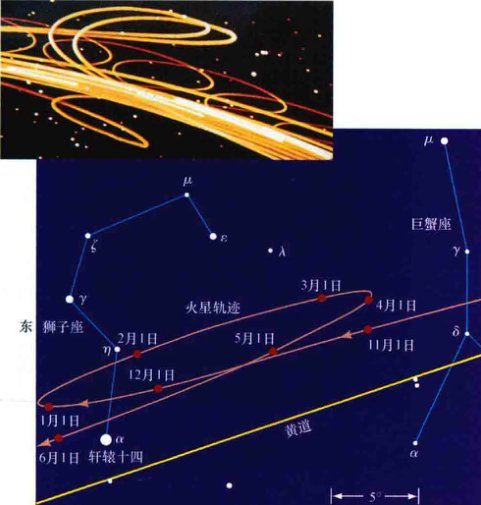
<div class="caption" style="text-align: right; width: 45%; float: right; clear: right;">
<strong>图2.4 行星的运动</strong><br/>
        大多数时候，行星相对背景恒星从西向东运动。然而，偶尔——大约一年一次——它们会改变运动的方向，在再次回头之前暂时进入逆行（从东向西）。主图展示了火星运动的一次实际逆行往返。插图描绘了几颗行星在几年时间内的运动，并重现在了天文馆的穹顶上。[波士顿科学博物馆 (Boston Museum of Science)]
    </div>
<div style="clear: both;"></div>
<p>古天文学家清楚地知道，逆行与其他行星属性紧密相关，如视亮度和在天空中的位置。图2.5（注意是现代观点的太阳系！）展示三颗行星的轨道示意图并定义一些久负盛名的天文学名词来描述行星相对于地球和太阳的位置。水星和金星被称为<strong>内</strong>（“低”）<strong>行星</strong>，因为它们的轨道位于地球与太阳之间；火星、木星和土星的轨道在地球轨道之外，被称为<strong>外</strong>（“高”）<strong>行星</strong>。对早期天文学家来说，行星轨道观测的关键如下：</p>
<ul>
<li>从地球上看，内行星从不会距离太阳太远。如图2.5的插图所示，由于内行星在天球上的轨迹靠近黄道，因此每次轨道运动时，内行星相对太阳有两次<strong>合</strong>（或紧密接近）。（当然，此时内行星实际并不接近太阳，简单地说，合是行星和太阳处在天空中同一方向的时候。）<strong>下合</strong>时，行星最接近于地球，并且从东向西经过太阳——也就是说，处于逆行阶段；<strong>上合</strong>时，行星距离地球最远，并沿相反（顺行）的方向经过太阳。</li>
<li>从地球上看，外行星不像内行星那样被“限制”在太阳附近。外行星在天球上的每圈旅程相对于太阳有一次上合。但在<strong>冲</strong>时，它们表现为逆行（图2.4），此时，它们和太阳分别处在天球上正好相对的位置。</li>
<li>逆行期间，外行星在冲时最亮。与之相比，内行星在下合前后几周内亮度最亮。</li>
</ul>
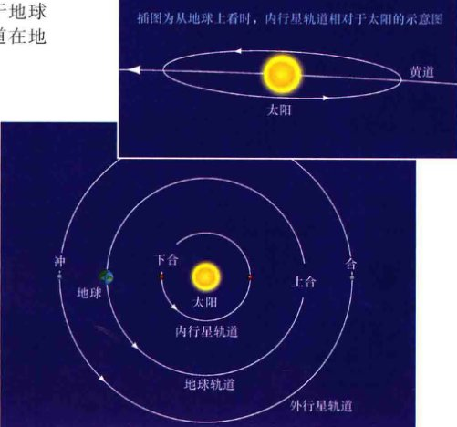
<div class="caption" style="text-align: right; width: 50%; float: right; clear: right;">
<strong>图2.5 内、外行星的轨道</strong><br/>
        地球和其他两颗行星可能出现的轨道示意图。“内”行星轨道位于地球轨道和太阳之间。水星和金星的运动类似于这种轨道。“外”行星轨道（如火星、木星或土星的轨道）位于地球轨道之外。轨道上标识出的点表明行星看起来靠近太阳（合）或与太阳位置在天球上正好相反（冲）的时候。
    </div>
<div style="clear: both;"></div>
<p>那么现在，天文学家所面临的挑战是寻找一个可以解释所有已出现的观测现象的太阳系模型，同时也能提供可验证的和可靠的有关行星未来运动的预报。（1.2节）</p>
<p>古代天文学家正确地推断出夜空中行星的亮度变化与其到地球的距离有关。与月球一样，行星本身并不发光，它们靠反射太阳光发亮，一般来说，距离我们最近时最亮。看看图2.5，你可能已经能够领悟那些刚刚列出的行星性质的根本原因了。下一节中，我们将回到“现代”解释中来。然而，正如我们现在所讨论的，古人采用了迥然不同的方法来尝试解释行星的运动。</p>
<h3>理论模型</h3>
<p>最早的太阳系模型跟从希腊哲学家亚里士多德（公元前384—前322年）的教义，是<strong>地心</strong>模型，这意味着地球位于宇宙的中心，所有其他天体都在绕其运动。（1.3节）图1.11和1.16所示的天球阐明了基本的地心观。这些采用亚里士多德以及之前柏拉图教义的模型有着完美的形式——圆。可能这是最简单的描述了——以地球为中心均匀地运动——它提供了相当好的太阳和月球的近似轨道，但却无法解释观测到的行星亮度变化或是行星的逆行，而且还需要更复杂的模型来解释天上的这些“漫游者”。</p>
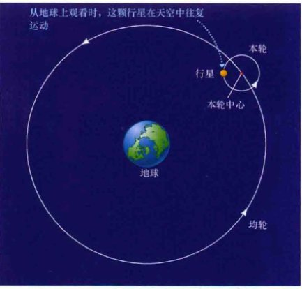
<div class="caption" style="text-align: right; width: 40%; float: right; clear: right;">
<strong>互动图2.6 地心模型</strong><br/>
        在太阳系的地心模型中，观测到的行星运动使得我们不可能认为它们是在简单地绕地球做圆周运动。相反，每颗行星被认为是沿着一个小圆（本轮）绕着一个虚拟的点运动，而该点本身绕着地球沿一个更大的圆形轨道（均轮）运动。
    </div>
<p>在构建新模型的第一步中，认为每颗行星在沿一个被称为“<strong>本轮</strong>”的小圆上做匀速运动，而本轮的中心则绕地球沿另一个大一些的、被称为“<strong>均轮</strong>”（图2.6）的圆匀速运动。行星的运动现在是由两种不同的圆周运动组成，并提供了这样的可能性：在某些时候，行星的视运动可能是逆行的。同时，行星到地球的距离也会变化，这解释了亮度的变化。通过修改本轮和均轮的相对大小、行星在本轮上的速度，以及本轮沿均轮的运动速度，早期的天文学家能够让这种“周而复始的”运动相当好地符合行星在天空中被观测到的轨迹。此外，该模型也具有良好的预测能力，至少是符合了当时的观测精度。</p>
<p>然而，随着观测的次数和质量的提高，简单的本轮模型显然并不完美，必须引入少量修正以符合新的观测。均轮的中心不得不稍微偏离地球中心，本轮的运动必须构想成是相对于空间中另外一点的均匀运动，而不是相对于地球。此外，为了解释内行星的运动，模型只好简单地假定水星和金星的均轮由于某些（未知的）原因与太阳有关。类似的假设也应用在外行星上，以确保逆行发生在冲时。</p>
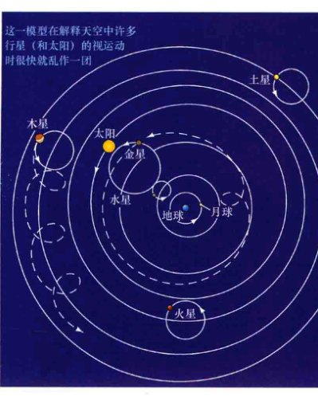
<div class="caption" style="text-align: left; width: 40%; float: left; clear: left;">
<strong>图2.7 托勒密的模型</strong><br/>
        粗略地按比例画出基本特征的托勒密内太阳系地心模型，这是文艺复兴前广泛流行的模型。图中只显示了古人所知的五颗肉眼可见的行星——水星、金星、火星、木星和土星。为了避免混淆，只画出了两颗行星——金星和木星——的部分轨迹（虚线）。
    </div>
<p>约在公元140年，名叫托勒密的希腊天文学家构造了也许是有史以来最为完美的地心模型。如图2.7简单所示，它非常好地解释了那时已知的五颗行星的观测轨迹，以及太阳和月球的轨迹。然而，为了实现其解释和预测的能力，完整的<strong>托勒密模型</strong>需要的圆的个数不少于80个。要解释我们今天已知的太阳、月球和所有八颗大行星（以及它们的卫星）的运动轨迹，需要极为复杂的设计。不管怎样，托勒密在这个问题上的全面表述，在此后1000多年的时间里为所有有关宇宙的讨论提供了知识框架。</p>
<h3>地心模型的评价</h3>
<p>如今，我们所受的科学训练引导我们力求简单，因为在物理科学中，简单性经常被证明是真理的指示器。我们认为，像托勒密系统这样错综复杂的模型，其复杂性是有根本缺陷的理论的明显标志。（1.2节）为什么托勒密的模型如此复杂？凭借后见之明，我们现在知道它最大的错误在于地心宇宙的假设。这种错误观点混合了哲学上极力主张的匀速圆周运动，其依据主要来自于哲学思维，而不是从本质上来自于科学。</p>
<p>事实上，历史记录了一些希腊天文学家关于天体运动的不同推断。其中最著名的是萨摩斯的阿利斯塔克（公元前310—前230年），他认为所有的行星，包括地球，都绕着太阳转动；此外，地球还绕着自己的轴每天自转一圈。这结合了公转和自转，他认为会造成天空的视运动——这是个简单的观点，骑在旋转木马上的人都熟知，所见到的景象看起来是在向相对的方向运动。然而，阿利斯塔克关于天空的描述虽然在本质上是正确的，但在他有生之年却没有被广泛接受。亚里士多德的影响太大，他的追随者太多，并且他的著作也传播得太广泛。公元16世纪之前，地心说基本上不受质疑。</p>
<p>亚里士多德学派提出一些简单和（当时）令人信服的理由来支持他们的观点。首先，当然，如果地球在动，我们就会感觉到——如果地球在移动，当它绕太阳高速运动时，难道不会有很强的风吗？同时，考虑到在一年之中，我们观测恒星时所处的有利位置的变化，为什么我们没有看到恒星的视差呢？（1.6节）</p>
<p>如今，我们可能会反驳第一点太过幼稚，但后面的一点的确是有根据的观点，推断起来也基本是对的。确实，我们现在知道随着地球绕太阳运动，恒星视差是存在的。然而，由于恒星是如此遥远，所以即使是最近的恒星，视差的大小也不超过1"（1角秒）。早期的天文学家只是没有注意到而已。（事实上，恒星视差直到19世纪中期才有确定的测量。）</p>
<p>我们会遇到天文学的许多其他实例，由于依据的数据不够充分，所以正确的推理却导致错误的结论。即使正确地应用了科学方法，理论预言也利用现实进行了测试，理论仍然可能仅仅是符合它所基于的观测。（1.2节）</p>
<h2>2.3 太阳系的日心模型</h2>
<p>托勒密的宇宙观几乎被原封不动地保持了近14个世纪，直到16世纪的波兰传教士尼古拉·哥白尼（图2.8）重新发现阿利斯塔克的<strong>日心</strong>模型（以太阳为中心），并展示其如何和谐而有条理地提供了对观测事实更自然的解释，而不像紊乱的地心宇宙学说那样。哥白尼宣称地球绕着自己的轴旋转，并且像其他行星一样，绕太阳公转。他还提到只有月球在绕地球运动。正如我们将看到的，这个模型不仅解释了观测到的天空的每日和季节性变化，而且自然而然地解释了行星的逆行和亮度变化。（1.4节）</p>
<p>发现地球不是宇宙中心的关键认识被称为<strong>哥白尼革命</strong>。探索2-1中总结了构成其基础的七个关键表述。</p>

<div class="caption" style="text-align: left; width: 35%; float: left; clear: left;">
<strong>图2.8 尼古拉·哥白尼 (1473—1543)</strong><br/>
        [E. 莱辛 (E. Lessing)/艺术资源，纽约 (Art Resource, NY)]
    </div>
<aside class="sidebar">
<span class="sidebar-title">探索2-1 哥白尼革命的基础</span>
<p>下列7点基本为哥白尼的原话，<em>斜体部分</em>为额外说明：</p>
<ol>
<li>天球不止有一个共同的中心。<em>确切地说，地球不是万物的中心。</em></li>
<li>地心不是宇宙的中心，但它是重力和月球轨道的中心。</li>
<li>所有的球体都绕太阳公转。<em>哥白尼所指的球体意为行星。因此，太阳是宇宙的中心。</em></li>
<li>地球到太阳的距离与苍穹的高度之比要比地球半径与日地距离之比小得多，日地距离相比苍穹的高度是微不足道的。<em>哥白尼的苍穹是指遥远的恒星。他想说明的是，地球距恒星的距离要比距太阳远很多。</em></li>
<li>苍穹看起来的运动并不是它本身的运动，而是地球的运动。地球绕固定的轴每天自转一周，而苍穹作为最高的空间则保持恒定不动。<em>由于恒星是如此的遥远，所以我们所见到的任何恒星视运动都是地球自转的结果。</em></li>
<li>太阳的运动不是它本身的运动，而是地球的运动。同样，太阳的周日和周年运动实际上是地球不同类型的运动造成的。</li>
<li>我们所见到的行星逆行和顺行并不是行星自己的运动，而是地球运动造成的。日心说提供了行星逆行的天然解释，同样也是地球运动的结果。</li>
</ol>
</aside>
<div style="clear: both;"></div>
<p>图2.9显示了用哥白尼的观点如何解释行星（以火星为例）的亮度变化、观测到的往复运动，以及外行星在冲日时发生逆行的事实。如果我们假设地球的运动比火星要快，那么地球偶尔就会“超越”火星。于是火星看起来便会在天空中向后移动，非常类似于我们在高速公路上超过一辆车时，看起来它相对于我们似乎在滑向后方。如果用金星相对地球来替换火星相对地球，那么你也应该能将该解释用在内行星上。（然而，要完整地说明它们的亮度变化，需要等到9.1节！）注意，在哥白尼的图解中，行星的往复运动仅仅是视运动；而在托勒密看来，这是真实的运动。</p>
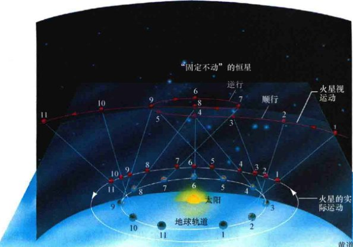
<div class="caption" style="text-align: right; width: 45%; float: right; clear: right;">
<strong>互动图2.9 逆行</strong><br/>
        哥白尼的太阳系模型解释了行星的亮度变化和逆行现象。比如这里，当地球和火星在它们各自的轨道上彼此接近时（如位置6），火星看起来会更亮。当它们互相远离时（如位置1），火星看起来变暗。同时，随着两颗行星绕太阳公转，地球到火星的（淡蓝色）视线在变化，因此看起来火星在逆行期间来回运动。按序号查看视线，注意视线在位置5到7之间相对于恒星如何向后移动。这是因为地球在内部轨道以比火星快的速度运动。白色曲线显示实际的行星轨道，从地球上看到的火星运动以红色曲线表示。
    </div>
<div style="clear: both;"></div>
<p>哥白尼引入日心模型的主要动机是朴素的。即便如此，他仍受到希腊思想的影响并坚持用圆周运动来模拟行星的运动。为了让自己的理论与夜空中的观测相符，他被迫保留了本轮运动的观点，尽管均轮是以太阳而不是以地球为中心，而且本轮也比托勒密描述的要小。因此，他保留了不必要的复杂性，但实际预测能力不比地心说多多少。日心模型修正了托勒密系统的一些小的差异和矛盾，但对哥白尼来说，日心说最主要的吸引力是它的简单朴素——它“更赏心悦目”。他的理论更多的是他的感觉而不是检验。如今，科学家在模拟宇宙的所有方面时，仍然遵循简洁、对称和美丽。</p>
<p>尽管有一些观测数据的支持，但无论是哥白尼的学者同事还是普通大众，都不易接受哥白尼的模型。对学者来说，日心说与之前的思想背道而驰，并且违反了当时的许多宗教教义，因为将地球降级到了宇宙和太阳系中非中心的平凡位置。哥白尼的工作几乎没有影响当时的民众，部分原因是因为他是以拉丁语（当时的标准学术用语）出版的，而大多数人都读不懂。直到哥白尼死后很久，当其他人——尤其是伽利略·伽利莱——推广他的思想时，罗马天主教会才足够认真地考虑禁止他们。哥白尼有关日心宇宙的著作在1616年被放进了教会违禁书籍索引中，此时距离该书的首次出版已经73年了。直到18世纪末，这些书才被解禁。</p>
<div class="concept-check">
        在说明行星逆行时，太阳系的地心模型和日心模型有何不同？
    </div>
<h2>2.4 现代天文学的诞生</h2>
<p>哥白尼死后，在他的太阳系理论发表后的100年里，两位科学家——<strong>伽利略·伽利莱</strong>和<strong>约翰内斯·开普勒</strong>——为天文学研究做出了不可磨灭的贡献。作为同一时代的人，他们熟知各自的工作并不时交流各自的理论。他们都因为自身的发现而闻名于世，并在普及哥白尼的宇宙观方面取得了伟大的进步；然而，他们取得各自天文学成就的方法却如白天黑夜般大不相同。</p>
<h3>伽利略的历史性观测</h3>
<p>伽利略·伽利莱（见图2.10）是意大利数学家和哲学家。伽利略愿意进行试验来测试他的想法——在当时，这是相当激进的途径——同时，通过引入新兴的<strong>望远镜</strong>技术，他彻底地改变了科学研究的方法，以至于如今仍普遍认为他是“实验科学之父”。</p>

<div class="caption" style="text-align: right; width: 35%; float: right; clear: right;">
<strong>图2.10 伽利略·伽利莱 (1564—1642)</strong><br/>
        [艺术资源，纽约 (Art Resource, NY)]
    </div>
<p>望远镜是17世纪早期在荷兰发明的。听说了这项发明后（从来没有见过），伽利略在1609年自己制造了一台望远镜并把它指向了天空。他所见到的天空同亚里士多德的哲学观点大相径庭，并提供了许多新的数据来支持哥白尼的观点。</p>
<p>利用他自己的望远镜，伽利略发现了月球上的山脉、山谷和环形山——让人联想到地球的各种地形。通过观测太阳（这是<strong>绝对不能直接观测的</strong>，最终很可能会导致失明），他发现了太阳表面的瑕疵——那是在现在被称为<strong>太阳黑子</strong>的黑斑。这些观测直接与当时的正统思想相悖。通过记录太阳黑子日复一日的外观变化，伽利略断定太阳在<strong>自转</strong>，大约每月绕与黄道面大致垂直的轴旋转一圈。</p>
<p>伽利略也看到了四个肉眼看不见的光点，它们绕着木星运动，他意识到它们是木星的卫星。图2.11展示了这些卫星的草图，取自于伽利略的笔记。对伽利略来说，其他行星也有卫星的事实为哥白尼模型提供了强有力的支持。显然，地球并不是万物的中心。他还发现金星的视面大小在变化，像月球一样，展示出完整的相位变化周期（图2.12），而这个发现只能用行星绕太阳的运动来解释。这些观测有力地证明了地球不是万物的中心，至少有一颗行星在绕太阳运动。</p>

<div class="caption" style="text-align: left; width: 35%; float: left; clear: left;">
<strong>图2.11 伽利略卫星</strong><br/>
        伽利略在他的笔记本上画下的四颗木星的伽利略卫星，显示了他在1610年1月7日至15日这七个晚上的所见。
    </div>
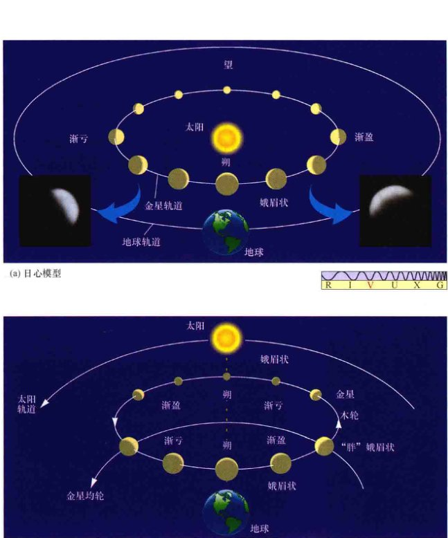
<div class="caption" style="text-align: right; width: 45%; float: right; clear: right;">
<strong>互动图2.12 金星相位</strong><br/>
        (a) 在哥白尼的模型中，当金星正好位于地球和太阳之间时，它未被太阳光照亮的一面朝向我们，因此金星此时不可见。随着金星沿其轨道运行，渐渐地，在地球上能看见金星更多被照亮的表面。(b) 托勒密的模型不能解释这些观测，尤其是无法解释金星的满相位。
    </div>
<div style="clear: both;"></div>
<p>1610年，伽利略出版了名为《星际信使》 (Sidereus Nuncius) 的书，详述他的观测发现和支持哥白尼理论的有争议的结论。在报道和解释用望远镜得到的奇妙观测时，伽利略直接挑战了当时的科学正统观念和宗教教义。他（简直是）在玩火——他一定知道仅仅在几年前 (1600年)，天文学家乔尔丹诺·布鲁诺被烧死在罗马的火刑柱上，部分原因是他教授地球是围绕太阳转动的异端学说。但不管怎样，据说伽利略喜欢公然嘲笑和激怒他的亚里士多德学派同事。1616年，伽利略的观点被裁定是异端邪说，哥白尼的著作也被罗马天主教廷禁止，伽利略被劝导放弃掉他的天文事业。</p>
<p>但伽利略不会停歇。1632年，他顶风出版了《关于两大世界体系的对话》 (Dialogue Concerning the Two Chief World Systems)，比较了托勒密和哥白尼的模型。这本书介绍了三个人之间的讨论，其中一个愚蠢的亚里士多德学派的人的观点（实际上陈述的是当时的教皇——乌尔班八世的观点）屡次被他的两个同伴中，一个明确支持日心说的同伴的观点全面击败。为了让自己的著作能够得以广泛传播，伽利略用的是意大利语而不是拉丁语。这些举动造成了伽利略与教会权威的直接冲突。最终，宗教法庭以酷刑威胁，强迫他收回有关地球绕太阳公转的观点。1633年，伽利略被软禁。在他的余生里，伽利略一直被囚禁着。直到1992年，教会才公开赦免了伽利略的“罪行”。但对宗教正统宇宙观造成的破坏已经覆水难收，哥白尼的精灵彻底跳出了瓶子。</p>
<aside class="sidebar">
<h3>哥白尼学说的胜利</h3>
<p>虽然文艺复兴时期的学者是正确的，但他们无法证明我们的行星系统是以太阳为中心的，也无法证明地球是在太空中运动的。地球轨道运动的观测效应太小，当时的技术无法探测到。地球运动的直接证据直到1728年才获得，英国天文学家詹姆斯·布拉德利发现了星光的<strong>光行差</strong>——恒星观测方向的微小改变（约20"），它源自于地球垂直于视线的运动，就像雨点垂直下落时，在行进的汽车或火车窗户上留下倾斜的痕迹那样。布拉德利的观测首次证明了地球在绕太阳公转，而其他更多不同方向的大量恒星的后续观测再次确认了这一效应。地球轨道运动的另一个证据来自1838年，德国天文学家弗里德里希·贝塞尔首次明确测定了恒星视差，如图1.30所示。（1.6节）</p>
</aside>
<div class="concept-check">
        按照第1章中提出的科学方法，日心说相对地心说的主要优势是什么？
    </div>
<h2>2.5 行星运动定律</h2>
<p>大约与伽利略因开创性的望远镜观测和直言不讳地宣传哥白尼的学说而同时闻名——或者说是同时“声名狼藉”，约翰内斯·开普勒（图2.13），一位德国数学家和天文学家，发现了现在以其名字命名的行星运动定律。伽利略在许多方面都是第一位“现代”的观测者。他采用新兴的技术，用望远镜获得了针对宇宙的新见解。相比之下，开普勒是一位纯粹的理论家。他所做的阐明我们对行星运动认知的开创性工作几乎是完全基于他人的观测，主要是基于<strong>第谷·布拉赫</strong> (1546—1601) 所汇编收集的大量数据。第谷·布拉赫既是开普勒的雇主，也可以说是最伟大的观测天文学家之一。</p>

<div class="caption" style="text-align: left; width: 35%; float: left; clear: left;">
<strong>图2.13 约翰内斯·开普勒 (1571—1630)</strong><br/>
        [E. 莱辛 (E. Lessing)/艺术资源，纽约 (Art Resource, NY)]
    </div>
<h3>布拉赫的复杂数据</h3>
<p>第谷，经常被认为既是一个古怪的贵族，也是一个熟练的观测者。他出生在丹麦，就读一些欧洲最好的大学，陆续学习了占星术、炼金术和医学。早在望远镜发明的几十年前，他在自己的天文台里进行了大部分的观测，天文台名为乌兰尼堡 (Uraniborg)，位于丹麦（图2.14）。在那里，第谷使用他自己设计的仪器，一丝不苟地准确记录了恒星、行星和其他值得注意的天文事件，包括彗星和超新星（见《今日天文——恒星：从诞生到死亡》第10章），这些天文事件使他确信亚里士多德的宇宙观是不可能正确的。</p>
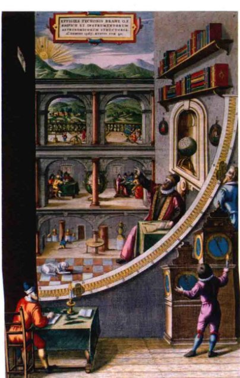
<div class="caption" style="text-align: right; width: 35%; float: right; clear: right;">
<strong>图2.14 第谷·布拉赫</strong><br/>
        天文学家第谷·布拉赫在位于丹麦汶岛的乌兰尼堡天文台。第谷关于恒星和行星在天空中位置的观测是有史以来最精确、最完整的一套肉眼测量结果。[纽贝里图书馆 (Newberry Library)/超级素材 (Superstock)]
    </div>
<p>1597年，由于失宠于丹麦王廷，第谷搬到了布拉格，成为神圣罗马帝国的帝国数学家。布拉格碰巧离奥地利的格拉茨不远，也就是开普勒生活和工作的地方。开普勒于1600年在布拉格加入第谷的工作，开始试图找出能够解释第谷的行星数据的理论。第谷去世一年后，开普勒不仅继承了他的职位，而且还拥有了第谷最无价的财产：跨越几十年的行星累积观测。这些观测虽然是用肉眼观测的，但质量却非常高。在大多数情况下，第谷测量的恒星和行星位置精度在 1' 以内。开普勒开始寻求一种统一的定律来详细解释行星的运动，而不再需要本轮。他的努力花费了他剩下的29年生命中的许多时间。</p>
<p>开普勒已经接受了日心太阳系的描述。他的目标是在哥白尼的框架内找到一个简单而精妙的行星运动描述，满足第谷复杂而大量详细观测。最终，他发现必须要放弃哥白尼有关行星圆轨道的简单观念。更朴素的理论因而应运而生。经过对第谷的行星数据的多年研究，经过多次错误的开始或是踏进死胡同，开普勒发现了现在以他的名字命名的定律。</p>
<p>开普勒通过三角测量确定了每颗行星的轨道形状——不是从地球上的不同点出发，而是从地球公转轨道上的不同点出发，使用了许多一年中不同时间所做的观测。（1.6节）利用地球轨道的一部分作为三角形的基线，开普勒能够测量出其他行星轨道的相对大小。通过记录行星在连续几个晚上的位置，他得到了行星运行的速度。我们不知道在开普勒偶然发现正确的形状之前，他尝试了多少种几何形状的轨道。由于必须要确定地球本身的轨道，所以他的难题变得更加错综复杂。无论如何，他最终成功地仅用三条行星运动定律，就总结了所有已知行星的运行，包括地球的运行。</p>
<h3>开普勒的简单定律</h3>
<p><strong>开普勒行星运动第一定律</strong>与行星轨道的形状有关：</p>
<p style="text-align: center; font-weight: bold; background: #fdfefe; padding: 15px; border-radius: 5px;">行星的轨道是椭圆（而不是圆），太阳位于椭圆的一个焦点上。</p>
<p><strong>椭圆</strong>是个扁平的圆圈。图2.15说明了如何用一根绳子和两个图钉来构造一个椭圆。图钉固定绳子的每个点被称为椭圆的<strong>焦点</strong> (focus, 复数: foci)。包含两个焦点的椭圆上两点的连线被称为长轴。长轴的一半被称为<strong>半长轴</strong>，用于描绘椭圆的大小。圆是两个焦点恰巧重合的特例；它的半长轴等于圆的半径。</p>
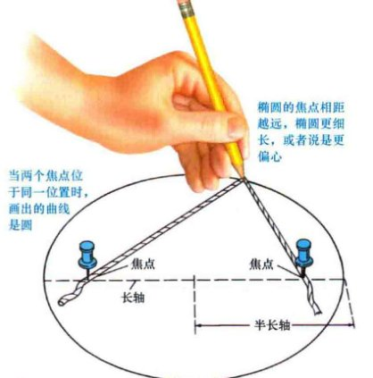
<div class="caption" style="text-align: right; width: 45%; float: right; clear: right;">
<strong>互动图2.15 椭圆</strong><br/>
        借助一根绳子、一支铅笔和两个图钉可以画出椭圆。
    </div>
<p>椭圆的<strong>偏心率</strong>用于简单衡量其扁平度。学术上，偏心率定义为两个焦点之间的距离与长轴的长度之比。最重要的是要记住，当偏心率等于零时对应于椭圆不椭——即完美的圆；而偏心率等于1时，意味着椭圆会被压扁成一条直线。注意，虽然太阳位于椭圆轨道的一个焦点上，但另外一个焦点是空的，并没有特别的物理意义。（但是，我们仍然可以找出它的位置，因为两个焦点是沿着长轴并相对于中心对称的。）</p>
<p>半长轴的长度和偏心率都是我们描述行星轨迹大小和形状所必需的（见详细说明2-1）。事实上，行星的椭圆轨道几乎没有一个是如图2.15所示的那样瘦长的。除水星轨道以外，太阳系内偏心率如此小的行星轨道是很难用肉眼与真正的圆区分开来的。由于轨道是如此接近于圆，所以托勒密和哥白尼的模型才用圆去尽量描述现实情况。</p>
<p>开普勒用椭圆替换圆轨道是一个不小的进步。它相当于放弃了人类的审美倾向——亚里士多德相信完美的圆——这从古希腊时起就支配了天文学。甚至连伽利略·伽利莱也是，在学术上很少听说他的保守，但他也坚持圆周运动并从来不接受行星是沿椭圆轨道运动的这一说法。</p>
<p>如图2.16所示，<strong>开普勒第二定律</strong>着眼于行星在轨道不同部分的运动速度：</p>
<p style="text-align: center; font-weight: bold; background: #fdfefe; padding: 15px; border-radius: 5px;">一条假想的连接太阳和任意行星的连线在相同的时间间隔内扫过相同的椭圆面积。</p>
<p>绕太阳运动时，图中的行星在相同时间段内划出标记分别为 A、B 和 C 的弧段。不过请注意，行星沿弧段 C 运动的距离要比沿弧段 A 运动的距离要长。由于时间相同而距离不同，因此行星的运动速度一定有所不同。当行星靠近太阳时，比如在弧段 C 处，行星运动比距离太阳远时（如在弧段 A 处）要快得多。</p>
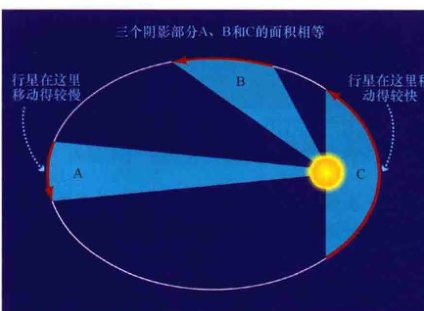
<div class="caption" style="text-align: left; width: 40%; float: left; clear: left;">
<strong>互动图2.16 开普勒第二定律</strong><br/>
        连接行星和太阳的直线在相同时间间隔内扫过相同的面积。三个阴影部分A、B和C的面积相等。任何沿着该椭圆轨道运动的天体在同样的时间内运动的距离如红色箭头所示。因此，距离太阳越近，行星运动越快。
    </div>
<div style="clear: both;"></div>
<aside class="sidebar more-precisely">
<span class="sidebar-title">详细说明2-1 行星轨道的一些属性</span>
<p>描述行星运动轨迹的大小和形状仅仅需要两个量——半长轴和偏心率。从这两个量，我们可以导出其他许多有用的量。其中两个最重要的是行星的<strong>近日点</strong>（距离太阳最近的点）和<strong>远日点</strong>（距离太阳最远的点）。从正文中所列出的定义可知，如果行星的轨道半长轴为 <em>a</em>、偏心率为 <em>e</em>，那么行星的近日点与太阳的距离为 <em>a(1-e)</em>，而远日点为 <em>a(1+e)</em>。这些点和距离如下图所示：</p>

<p><strong>示例1</strong> 我们可以在图中找到椭圆的另一个焦点，从而很简单地用文中所给出的定义来确定偏心率。第二个焦点位于长轴上的对称位置，用“X”标示出其位置。用尺子就可以测量（1）长轴的长度和（2）两个焦点之间的距离。用第二个距离除以第一个距离，应该能得到偏心率约为 3.4cm/6.8cm=0.5。或者也可以利用确定近日点的公式来计算。测得的近日点距离为 a(1-e) = 1.7cm，再除以 a=3.4cm，得到 (1-e) = 0.5，因此同样可得偏心率为 0.5。</p>
<p>没有一颗行星的轨道偏心率大于 0.5——偏心率最大的轨道是水星轨道，e=0.206（见表2.1）。但许多流星体和所有彗星（见第11章）的轨道偏心率都远大于此。事实上，大多数从地球可见的彗星的偏心率非常接近于 e=1。它们高度拉长的轨道在近日点接近太阳时只有几个天文单位，然而，这些小型冰冻世界在大部分时间里都待在冥王星轨道之外很远的地方。</p>
</aside>
<p>通过考虑行星在围绕太阳的椭圆轨道上的相对速度和位置，开普勒第一和第二定律解释了行星的亮度变化和观测到的特殊的不均匀运动，而这些都不能用假想的圆周运动来解释，即使是引入本轮。最终，本轮和均轮嵌套在天空中运动的理论一去不复返。经开普勒改进后的哥白尼理论允许椭圆轨道的可能性，不仅大大简化了太阳系的模型，同时也提供了更高的前所未有的预测精度。也请注意，这些定律并不仅仅适用于行星。它们可以应用到任何做轨道运动的天体上。例如，间谍卫星在接近地球表面时，运动非常迅速，这不是因为它们是由强大的星载火箭所推动，而是由于它们沿着服从于开普勒定律的大偏心率轨道运动。</p>
<p>开普勒在1609年首次发表了他的前两个定律，并声明他仅用火星轨道进行了验证。十年之后，他将定律扩展到所有当时已知的行星（水星、金星、地球、火星、木星和土星）上，并增加了关于行星轨道大小与其轨道周期（行星绕太阳公转完整一圈所需的时间）的<strong>开普勒第三定律</strong>：</p>
<p style="text-align: center; font-weight: bold; background: #fdfefe; padding: 15px; border-radius: 5px;">行星轨道周期的平方正比于它轨道半长轴的立方。</p>
<p>当我们选择以年（地球恒星年）作为时间单位、以天文单位作为距离单位时，该定律变得异常简单。一<strong>天文单位</strong> (AU) 等于地球绕日轨道的半长轴——实质上是日地平均距离。如同光年一样，天文单位是为天文学中所遇到的超长距离而特殊定义的。利用这样的时间和距离单位，我们可以针对任意行星将开普勒第三定律改写成：</p>
<p style="text-align: center; font-size: 1.2em;"><em>P</em><sup>2</sup>（地球年）= <em>a</em><sup>3</sup>（天文单位）</p>
<p>其中 <em>P</em> 是行星轨道周期，<em>a</em> 是行星轨道半长轴的长度。第三定律意味着行星的轨道周期 <em>P</em> 增加的比对应的轨道大小 <em>a</em> 快得多。例如，地球轨道半长轴为 1AU，轨道周期为 1地球年。金星轨道大小约为 0.7AU，完成一整圈运动仅需要 0.6地球年——约 225 天。相反，土星距离太阳差不多 10AU，需要比 10地球年要多得多的时间——实际大约为 30年——才能绕太阳运动一周。</p>
<p>表2.1提供了现在已知的八大行星的基本轨道数据。文艺复兴时期的天文学家们已经知道其中最靠里的六颗行星的轨道属性并用其构造了目前仍被公认的日心太阳系模型。第二列中列出了每颗行星的轨道半长轴，用天文单位表示。第三列给出了轨道周期，以地球年为单位。第四列列出了行星的轨道偏心率。为了验证开普勒第三定律，第五列列出了 <em>P</em><sup>2</sup>/<em>a</em><sup>3</sup> 的比值。正如我们已知的，采用表中的单位时，第三定律预示着 <em>P</em><sup>2</sup>/<em>a</em><sup>3</sup> 的比值应该始终是定值 1。</p>
<p>开普勒所导出的运动定律远远不止是符合已有的观测数据，它们也可用于做出明确的、可验证的行星未来位置的预测。每次利用观测进行验证时，这些预测都被证实具有很高的精度——这正是任何可靠的科学理论所具有的品质。（1.2节）</p>
<div class="concept-check">
        为什么开普勒行星运动定律应用到天王星和海王星上也是有效的？
    </div>
<h2>2.6 太阳系的规模</h2>
<p>开普勒定律使我们能够构建一个太阳系的比例模型。虽然所有行星的轨道都有着正确的形状和相对大小，但这并不能告诉我们任何轨道的实际大小。我们可以只用日地距离来表示到每颗行星的距离。这是为什么呢？因为开普勒的所有三角测量都使用了地球轨道的一部分作为基线，距离可以只用轨道尺寸的相对值来表示，而不用确定其本身的大小。因此，我们的太阳系模型就像一幅用城镇相对位置表示的美国道路图，但是却缺乏最为重要的以km或mile表示的距离标度。例如，我们知道堪萨斯城距离纽约大概是到芝加哥距离的 3 倍远，但我们并不知道地图上任意两个城市之间的实际里程。</p>
<p>如果我们能以某种方式确定天文单位的大小——以 km 表示，那我们将能在我们的太阳系地图上增加至关重要的标度，并计算出太阳到每颗行星的精确距离。我们可能会推荐用三角测量法来直接测量地球到太阳的距离，然而，我们将发现以地球直径作为基线是不可能测得太阳的视差的。对于我们来说，太阳太亮、太大而且太模糊，无法分辨出它相对于遥远恒星背景的视位移。因此，要测量地球到太阳的距离，我们必须采取其他一些方法。</p>
<p>在现代，获得太阳系绝对标度[也就是说，用千米 (km) 数来表示尺度的大小，而不是只用相对地球轨道的大小]的方法是通过雷达，而不是三角测量。雷达的英文 <strong>radar</strong> 是 <strong>ra</strong>dio <strong>d</strong>etection <strong>a</strong>nd <strong>r</strong>anging （无线电探测和测距）首字母的缩写。在这种技术中，无线电波被传送向某一天体，比如一颗行星。（我们不能用雷达测距直接测量到太阳的距离，因为无线电信号会在太阳表面被吸收，因而不会反射回地球。）雷达回音表明了天体的方向和范围，或者距离，并用绝对单位表示——也就是说，用千米而不是用天文单位表示。把雷达信号来回传播的 300s 时间（信号传输和回波接收之间花费的时间）乘以光速 (300,000km/s，也是无线电波的速度），我们就能得到 2 倍目标行星的距离。</p>
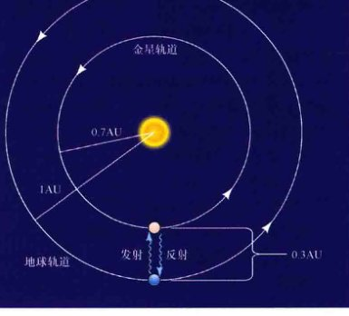
<div class="caption" style="text-align: right; width: 40%; float: right; clear: right;">
<strong>图2.18 天文单位</strong><br/>
        蓝色波浪线表示当金星距离地球最近时，雷达信号传向金星并反射回地球。地球的轨道半径为1AU，金星的轨道半径为0.7AU，信号单程传播的距离是0.3AU，我们由此确定了天文单位的千米数。
    </div>
<div style="clear: both;"></div>
<p>金星轨道周期性地接近地球，它是雷达测距最常用的目标。往返传播时间（例如，在最靠近地球时，如图2.18中的波浪线所示）能被高精度地测量——事实上，足以用于确定精度约为 1km 的行星距离。通过这种方法，可知目前的天文单位为 149,597,870km。我们将在本教材中使用四舍五入后的数值 1.5 x 10<sup>8</sup>km。</p>
<p>确定天文单位的数值后，我们可以重新用更熟悉的单位给出其他行星轨道的大小，比如用千米或英里。太阳系的整体尺度接着就能被高精度地校准。</p>
<div class="concept-check">
        为什么开普勒定律没有告诉我们天文单位的数值？
    </div>
<h2>2.7 牛顿定律</h2>
<p>开普勒三定律是以经验为主发现的、简化了太阳系的模型。换句话说，它们完全来自对观测数据的分析，而不是来自任何理论或数学模型。事实上，开普勒并没有运用任何物理学来得到他的运动定律。哥白尼也不知道为什么他的日心太阳系模型是有效的，甚至是伽利略，虽然通常被称为现代物理学之父，他也不理解为什么行星会绕着太阳运动（尽管伽利略的工作奠定了牛顿理论的重要基础）。</p>
<p>是什么阻止了行星飞向太空或是落向太阳？又是什么导致了它们绕着太阳无休止地公转？可以肯定的是，行星的运动遵循开普勒三定律，但只有考虑比这些定律更基础的东西才能让我们真正理解行星的运动。在 17 世纪，日心说已被公认，英国数学家艾萨克·牛顿（图2.19）更深入地研究了如何理解所有物体之间的运动和相互作用。</p>

<div class="caption" style="text-align: right; width: 35%; float: right; clear: right;">
<strong>图2.19 艾萨克·牛顿 (1642—1727)</strong><br/>
        [S. 特里 (S. Terry)]
    </div>
<h3>运动定律</h3>
<p>1642年圣诞节，艾萨克·牛顿出生在英格兰林肯郡。这一年，伽利略去世。牛顿曾就读于剑桥大学三一学院，但当1665年黑死病传播到剑桥时，他回到相对安全的故乡待了两年。在这段时间内，他有了可能是他最为著名的发现——万有引力（尽管这仅仅是牛顿所主导的许多重大科学进展之一）。然而，可能是因为他认为该理论还不完善或者是因为他怕受到同事的攻击或剽窃，在那之后差不多20年内，牛顿都没有告诉任何人他的不朽成就。直到1684年，当牛顿与埃德蒙·哈雷（因哈雷彗星而闻名）讨论当时的前沿天文难题——为什么行星运动符合开普勒定律时，他才向哈雷透露他差不多在20年前就完全解决了这个问题。这让哈雷感到惊讶！</p>
<p>在哈雷的推动下，牛顿在可能曾是最具影响力的物理学著作《自然哲学的数学原理》(Philosophiae Naturalis Principia Mathematica) ——我们今天所称的《科学》上发表了他的理论，一般简称为<strong>牛顿原理</strong>。该著作中所表达的观点形成了今天被称为<strong>牛顿力学</strong>的基础。三个基本的运动定律、万有引力定律，以及一些微分计算（牛顿的另一发明），足以说明和量化我们在地球和整个宇宙中所见到的几乎所有复杂动力学运动。</p>
<p>图2.20展示了<strong>牛顿第一运动定律</strong>：</p>
<p style="text-align: center; font-weight: bold; background: #fdfefe; padding: 15px; border-radius: 5px;">每个物体保持静止状态或是匀速直线运动状态，除非它受到外力作用而被强迫改变运动状态。</p>
<p>第一定律简单说明了运动的物体将沿直线运动，除非有某种外力——推或是拉——改变它的速度或者运动方向。例如，物体可能擦过一堵砖墙或是被棒球棒击打；每种情况下，力都会改变物体原始的运动状态。我们大多数人所熟悉的另外一种力的例子是<strong>重力</strong>（在美国一般以磅表示）——引力将你往地心拖拽时产生的力量。</p>
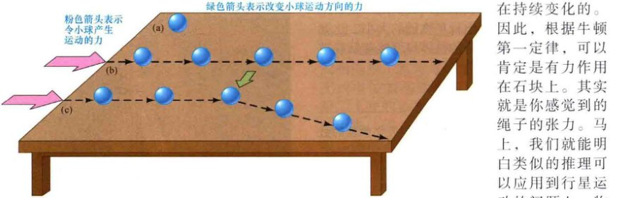
<div class="caption">
<strong>图2.20 牛顿第一运动定律</strong><br/>
        静止的物体将保持静止，(a) 直到有力作用到物体上。当力（红色箭头表示）如 (b) 作用到物体上，物体将保持匀速直线运动，直到有另一个力作用在它上面。当第二个力（绿色箭头）从与第一个力不同的方向 (c) 作用到物体上时，物体的运动方向会发生改变。
    </div>
<p>除非受到外力的影响，否则物体保持运动速度和运动方向不变的趋势被称为<strong>惯性</strong>。牛顿第一定律意味着物体不需要外力来保持匀速直线运动。这与亚里士多德的观点形成了鲜明对比，亚里士多德（错误地）认为一个物体的自然状态是静止——最有可能是亚里士多德基于对摩擦效应的观测得到的观点。在我们的讨论中将忽略摩擦——使球在地面滚动时、木块在桌面滑动时、以及棒球在空中运动时减速的力。在任何情况下，这都不是行星运动要考虑的问题，因为在外部太空中没有能被察觉的摩擦——没有空气或者其他任何物质阻碍行星的运动。伽利略首先意识到了这一点，并揭露了亚里士多德观点中的谬误，他在牛顿将惯性融入运动定律之前很久就设想了惯性的概念。</p>
<p>我们所熟悉的测量物体惯性的量是<strong>质量</strong>——不严谨地说，就是物体所包含的物质总量。物体的质量越大，惯性越大，并且需要更大的力才能改变它的运动状态。</p>
<p>牛顿第一定律描述的是匀速直线运动——也就是说，运动的速度保持不变。物体的<strong>速度</strong>包括速度的大小（速率，用mile/h或m/s表示）以及速度在空间中的方向（上、下、西北等）。在日常表述中，我们或多或少地倾向于等价使用术语“速率 (speed)”和“速度 (velocity)”，但我们必须意识到，这实际上是两个不同的量，并且牛顿运动定律表述的总是后者。一个说明它们之间不同的特例是，考虑一块系着绳子的石块。当你在头上旋转它时，石块做匀速圆周运动。石块的速率是常数，但运动方向在变化，因此石块的速度是在持续变化的。因此，根据牛顿第一定律，可以肯定是有力作用在石块上。其实就是你感觉到的绳子的张力。马上，我们就能明白类似的推理可以应用到行星运动的问题上。物体速度的变化率——加速、减速或只是改变方向——被称为物体的<strong>加速度</strong>，这正是牛顿第二定律的主题，它表述为物体的加速度与作用力的大小成正比、与物体的质量成反比：</p>
<p style="text-align: center; font-weight: bold; background: #fdfefe; padding: 15px; border-radius: 5px;">当力 <em>F</em> 作用到质量为 <em>m</em> 的物体上时，它产生的加速度 <em>a</em> 等于力除以质量。亦即，<em>a = F/m</em> 或 <em>F = ma</em>。</p>
<p>因此，作用在物体上的力越大或者是物体的质量越小，物体的加速度将越大。如果两个物体受到同样大小的力的牵引，质量越大的物体的加速度越小；如果两个相同的物体受到不同大小的力的牵引，受到作用力越大的物体的加速度越大。</p>
<p>加速度是速度的变化率，因此它的单位是速度单位除以时间单位，如米每二次方秒（通常表示为 m/s<sup>2</sup>）。为了纪念牛顿，国际单位制中力的单位就是以他的名字命名的。根据定义，1 <strong>牛顿</strong> (N) 的力能导致质量为 1千克 (kg) 的物体每秒钟产生 1米每二次方秒 (1 m/s<sup>2</sup>) 的加速度。1N 等于 0.22磅 (1磅约等于 0.453 592 37kg)。</p>
<p>在地球表面，重力使所有物体产生约为 9.8m/s<sup>2</sup> 的向下的加速度，而与物体的质量无关。根据牛顿第二定律，这意味着你的体重（以 N 为单位）正比于你的质量（以 kg 为单位）。我们将在后面重新讨论这一非常重要的概念。</p>
<p>最后，<strong>牛顿第三定律</strong>简单地告诉我们，作用力不是独立发生的：</p>
<p style="text-align: center; font-weight: bold; background: #fdfefe; padding: 15px; border-radius: 5px;">对于每个作用力，都有一个与之相等的、方向相反的反作用力。</p>
<p>换句话说，如果物体 A 在物体 B 上施加一个力，那么物体 B 必然也对物体 A 有大小相等的作用力，但方向相反。例如，当一个棒球球员击打出一个本垒打时，牛顿第三定律认为，球棒和棒球在它们接触的瞬间互相施加了大小相等、但方向相反的力。根据牛顿第二定律，棒球随后飞离的要比球棒快得多，因为棒球的质量要比球棒和击球者（吸收了大部分的反作用力）的质量总和要小得多，因此棒球的加速度要大得多。</p>
<h3>万有引力</h3>
<p>力可能是瞬间的，也可能是持续的。本垒打中，棒球棒施加的力当然能被看成是瞬时的力。一个很好的关于持续力的例子是阻止棒球一飞冲天、飞进太空的力——<strong>引力</strong>，这也让牛顿开始走上发现运动定律之路。牛顿假设任何有质量的物体都受到其他大质量物体万有引力的吸引。物体的质量越大，它的引力就越强。</p>

<div class="caption" style="text-align: left; width: 40%; float: left; clear: left;">
<strong>图2.21 重力</strong><br/>
        在大质量物体的表面，比如一颗行星上，向上扔出的棒球会不断地被行星的重力向下拉（箭头所示）——反过来说，棒球的引力也在不断地向上拉行星（虽然引力非常非常小）。
    </div>
<p>如图2.21所示，假设将一个棒球向上扔离地球表面。根据牛顿第一定律，地球向下的引力会不断改变棒球的速度，减缓棒球最初向上的运动，并最终让棒球掉落回地面。当然，棒球自身是有质量的，也对地球有引力。根据牛顿第三定律，该力的大小等于棒球的重量，方向与棒球所受重力（地球对棒球的吸引力）的方向相反。但是，根据牛顿第二定律，地球对较轻的棒球产生的作用效果比棒球对比它质量大得多的地球产生的作用效果要明显得多。棒球和地球互相之间产生的引力大小相等，但是地球获得的加速度要小得多。</p>
<p>行星运动的研究揭示了万有引力的第二面。在距离太阳中心等距离的位置上，万有引力的大小相等，并总是指向太阳。而且，对行星绕太阳公转时的加速度的详细计算显示，太阳对行星的引力随行星到太阳距离的增加而按平方反比例减小。万有引力因此是服从<strong>平方反比定律</strong>的。如图2.22所示，这种平方反比力随着距离引力源的增加而迅速减小。例如，距离增加 3倍将使引力减弱 3<sup>2</sup>=9倍，而距离增加 5倍将使引力减小 5<sup>2</sup>=25倍。尽管这种减小的趋势很明显，但引力永远不会完全变成零。一个有质量物体的引力永远不会完全消失。</p>
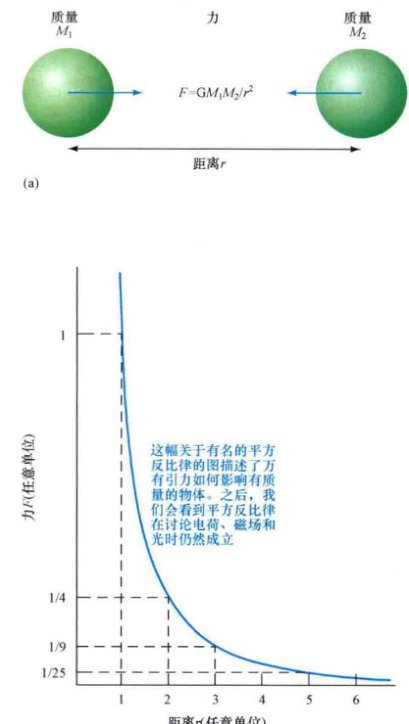
<div class="caption" style="text-align: left; width: 40%; float: left; clear: left;">
<strong>图2.22 万有引力</strong><br/>
        (a) 两个物体之间的万有引力正比于物体的质量，与物体之间距离的平方成反比。(b) 平方反比力随着距离的增加迅速减弱，但永远不会变为零，不管物体相距有多远。
    </div>
<p>我们可以把之前有关质量和距离的描述结合起来，组成任何有重量的物体（亦即，有质量的物体）彼此吸引都服从的引力定律：</p>
<p style="text-align: center; font-weight: bold; background: #fdfefe; padding: 15px; border-radius: 5px;">宇宙中所有物质粒子彼此之间都互相吸引，力的大小正比于产生作用的粒子的质量，与粒子中心之间相距距离的平方成反比。</p>
<p>按比例关系，万有引力定律可以写成：</p>
<p style="text-align: center;">引力的大小 ∝ (物体1的质量 × 物体2的质量) / (物体之间的距离<sup>2</sup>)</p>
<p>（符号 ∝ 在这里表示“成正比”）计算距离为 <em>r</em> 的，两个质量分别为 <em>m</em><sub>1</sub> 和 <em>m</em><sub>2</sub> 的物体之间的引力 <em>F</em> 的方法通常可以更简洁地表示如下：</p>
<p style="text-align: center; font-size: 1.2em;"><em>F</em> = <em>G m</em><sub>1</sub> <em>m</em><sub>2</sub> / <em>r</em><sup>2</sup></p>
<p>其中 <em>G</em> 被称为<strong>引力常数</strong>，或者通常被简称为牛顿常数，是宇宙的基本常数之一。<em>G</em> 的数值已经在极其精密的实验室里被测量了出来，大小为 6.67 x 10<sup>-11</sup> N · m<sup>2</sup>/kg<sup>2</sup>。</p>
<h2>2.8 牛顿力学</h2>
<p>牛顿的三大运动定律和万有引力定律为我们提供了坚实的理论支撑，以此为基础，我们可以更深入地理解行星的轨道、行星运动定律以及轨道运动的其他许多重要方面。随着牛顿力学的发展，从地心说到日心说的转变得以完成。</p>
<h3>行星的运动</h3>
<p>用牛顿万有引力来表述，太阳和行星之间的相互吸引导致了我们所观测到的行星轨道。如图2.23所示，这种引力不断地把每颗行星向太阳牵拉，使行星的运动方向发生偏转，变成弯曲的轨道。太阳的质量比任何行星都要大得多，因此它主导了这种相互作用。我们或许可以说是太阳“控制”了行星，而不是相反的情况。</p>
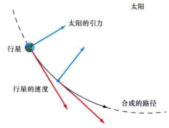
<div class="caption" style="text-align: right; width: 45%; float: right; clear: right;">
<strong>图2.23 太阳引力</strong><br/>
        太阳作用在行星上的向心引力与行星保持直线运动的趋势一较高下。这两种效果结合起来，造成行星平稳地沿折中的轨道运动，不断地“绕着太阳下落”。太阳引力与行星惯性之间无止境的角力造就了一个稳定的轨道。
    </div>
<div style="clear: both;"></div>
<p>这里所画出的太阳—行星之间的相互作用类似于我们之前用绳子拉着石块旋转的例子。太阳的引力就是你手中的绳子，行星就是绳子另一头系着的石块。绳子的张力提供了石块做圆周运动所必需的力。如果你突然放开绳子——就像是太阳的引力消失掉——根据牛顿第一定律，石块就会沿圆的切线方向飞走。</p>
<aside class="sidebar more-precisely">
<span class="sidebar-title">详细说明2-2 给太阳称重</span>
<p>我们可以利用牛顿力学，通过某些与行星轨道性质有关的公式得到太阳的质量。再次为了简单起见，让我们假定轨道为圆轨道（大多数情况下，这并不是一个糟糕的近似，牛顿定律可以很容易地扩展到更一般情况下的偏心轨道）。设想一颗质量为 <em>m</em> 的行星以速度 <em>v</em> 绕太阳在半径为 <em>r</em> 的轨道上运动，太阳的质量为 <em>M</em>。即使行星运动的速度是常数，但其运动的方向并不是不变的，因此行星的速度实际上是变化的——行星在加速。事实上，行星的加速度为 <em>a = v</em><sup>2</sup> / <em>r</em>。</p>
<p>因此，根据牛顿第二定律，要使行星保持在轨道上，所需的力为 <em>F = ma = mv</em><sup>2</sup> / <em>r</em>。让该方程等于由太阳引起的引力，我们得到 <em>mv</em><sup>2</sup> / <em>r</em> = <em>GmM</em> / <em>r</em><sup>2</sup>。因此行星在圆轨道上的速度为 <em>v</em> = sqrt(<em>GM</em>/<em>r</em>)。</p>
<p>现在让我们把问题转换一下。由于我们已经在地球上的实验室里测量得到了 <em>G</em>，而且我们也知道一年的长度和天文单位的大小，因此我们可以利用牛顿力学来<strong>称重太阳</strong>——也就是说，通过测量太阳对其他天体（本例中为地球）的引力影响来得到它的质量。重新表述上面的最后一个方程：<em>M = rv</em><sup>2</sup> / <em>G</em>。并代入已知量 v=30km/s, r=1AU=1.5 x 10<sup>11</sup>m，以及 G=6.7 x 10<sup>-11</sup>Nm<sup>2</sup>/kg<sup>2</sup>，我们计算得到太阳的质量为 2.0 x 10<sup>30</sup>kg——按地球标准来说，这是个相当巨大的质量。</p>
</aside>
<div class="concept-check">
        牛顿力学在什么方面取代了开普勒定律成为太阳系的模型？
    </div>
    <h3>开普勒定律的新思考</h3>

    <p>牛顿运动定律和万有引力定律为开普勒经验化的行星运动定律提供了理论解释。开普勒三定律直接遵循牛顿力学，正是描述物体在平方反比力的作用下运动的方程的解。然而，正如开普勒引入椭圆而不是圆来修改哥白尼的模型那样，牛顿也因此而修正了开普勒第一和第三定律。事实证明，行星并不是正好以太阳为中心运动的。相反，行星和太阳都绕着它们共同的<strong>质心</strong>运动——质心是构成两个物体的所有物质的“平均”位置（见图2.24）。由于太阳和行星受到大小相等、方向相反的引力作用（由牛顿第三定律决定），因此太阳一定也在行星的引力影响下运动（由牛顿第一定律决定）。然而，太阳的质量比任何行星的质量都要大得多，因此，行星—太阳所构成系统的质心非常靠近太阳的中心，这正是开普勒定律如此准确的原因。这样一来，开普勒第一定律变成：</p>

    <p style="text-align: center; font-weight: bold; background: #fdfefe; padding: 15px; border-radius: 5px;">行星绕太阳运动的轨道是一个椭圆，行星—太阳所构成的系统的质心是椭圆的一个焦点。</p>

    
    <div class="caption">
        <strong>图2.24 质心</strong><br>
        (a) 两个等质量物体的质心位于它们连线的中央。<br>
        (b) 当其中一个物体的质量增加时，质心的位置将朝它移动。有经验的跷跷板玩家都知道，当两边平衡时，质心位于跷跷板的支点上。
    </div>

    <p>如图2.24所示，两个质量类似的物体的质心不会位于任何一个物体内部。若质量相等的物体互相绕转，如图2.25 (a) 所示，轨道是两个同样的椭圆，其中一个共同的焦点位于两个物体的中央。对于质量不等的物体，如图2.25 (b) 所示，两个椭圆轨道也有一个共同的焦点，并且偏心率相等，但是质量稍大的物体运动得较慢，轨道也更小。（注意，如前所述，开普勒第二定律仍然不用修改就适用于任一轨道，但两个轨道扫过相同面积的速度是不一样的。）</p>

    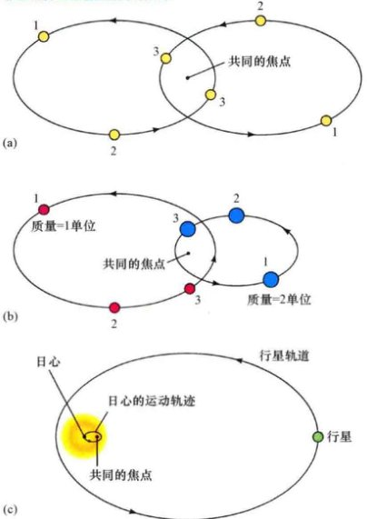
    <div class="caption">
        <strong>互动图2.25 轨道</strong><br>
        (a) 在引力的相互作用下，两个等质量天体（例如恒星）的轨道是相同的椭圆，并有一个共同的焦点。图中三对数字表明在三个不同的时刻，两个天体的位置。<br>
        (b) 一个天体的质量是另一个天体的两倍时，两个天体的轨道同样是有着相同偏心率的椭圆，但根据牛顿运动定律，质量越大的天体运动得越慢，轨道也较小。<br>
        (c) 质量极小的行星绕太阳公转的情况下，两个轨道共同的焦点可能会位于太阳的内部。
    </div>

    <p>对于行星绕太阳公转的情况，开普勒第三定律的修正也不大，但在其他一些情况下却非常重要，例如两颗恒星在彼此引力束缚下的轨道运动。按照数学化后的牛顿理论，我们发现，行星相对太阳的轨道半长轴 <em>a</em> （以 AU 为单位）与其轨道周期 <em>P</em> （以地球年为单位）的真正关系是：</p>

    <p style="text-align: center; font-size: 1.2em; font-family: 'Times New Roman', serif;">
        <em>P</em><sup>2</sup>（地球年）= <em>a</em><sup>3</sup>（天文单位） / <em>M</em><sub>全</sub>（以太阳质量为单位）
    </p>

    <p>其中 <em>M</em><sub>全</sub> 是两个天体的质量总和。注意，牛顿对开普勒第三定律的重述保留了 <em>P</em><sup>2</sup> 与 <em>a</em><sup>3</sup> 之间的正比例关系，但现在的比例关系中包含了 <em>M</em><sub>全</sub>，因此该关系对所有行星来说并不完全相同。然而，太阳的质量是如此之大，以至于太阳和其他任何一颗行星的质量总和之间的差别几乎是无法被察觉的，因此开普勒第三定律的最初表述是非常恰当的“近似”。修正后的开普勒第三定律适用于任何情况，不管是太阳系内还是太阳系外。</p>

    <!-- 侧边栏：详细说明 2-2 -->
    <aside class="sidebar more-precisely">
        <span class="sidebar-title">详细说明2-2 给太阳称重</span>
        <p>我们可以利用牛顿力学，通过某些与行星轨道性质有关的公式得到太阳的质量。再次为了简单起见，让我们假定轨道为圆轨道。设想一颗质量为 <em>m</em> 的行星以速度 <em>v</em> 绕太阳在半径为 <em>r</em> 的轨道上运动，太阳的质量为 <em>M</em>。即使行星运动的速度是常数，但其运动的方向并不是不变的，因此行星的速度实际上是变化的——行星在加速。事实上，行星的加速度为 <em>a = v</em><sup>2</sup> / <em>r</em>。</p>
        <p>因此，根据牛顿第二定律，要使行星保持在轨道上，所需的力为 <em>F = ma = mv</em><sup>2</sup> / <em>r</em>。让该方程等于由太阳引起的引力，我们得到 <em>mv</em><sup>2</sup> / <em>r</em> = <em>GmM</em> / <em>r</em><sup>2</sup>。因此行星在圆轨道上的速度为 <em>v</em> = <span style="font-family: serif;">√</span>(<em>GM</em>/<em>r</em>)。</p>
        <p>现在让我们把问题转换一下。由于我们已经在地球上的实验室里测量得到了 <em>G</em>，而且我们也知道一年的长度和天文单位的大小，因此我们可以利用牛顿力学来<strong>称重太阳</strong>——也就是说，通过测量太阳对其他天体（本例中为地球）的引力影响来得到它的质量。重新表述上面的最后一个方程：<em>M = rv</em><sup>2</sup> / <em>G</em>。并代入已知量 <em>v</em>=30km/s, <em>r</em>=1AU=1.5 x 10<sup>11</sup>m，以及 <em>G</em>=6.7 x 10<sup>-11</sup>Nm<sup>2</sup>/kg<sup>2</sup>，我们计算得到太阳的质量为 2.0 x 10<sup>30</sup>kg——按地球标准来说，这是个相当巨大的质量。</p>
        <p><strong>示例</strong> 类似地，已知地球到月球的距离 (<em>r</em>=384,000km)，以及恒星月的长度 (<em>P</em>=27.3天)，我们可以计算出月球在轨道上的速度为 <em>v</em>=2π<em>r</em>/<em>P</em>=1.02km/s，因此，利用前面的公式，测出的地球质量为 6.0 x 10<sup>24</sup>kg。</p>
    </aside>

    <p>事实上，天文学中所有质量的测量都是如此。因为当我们需要知道某个天体的质量时，我们不可能走出去用刻度尺测量，我们必须寻求它对其他物体的引力影响。这个原则适用于行星、恒星、星系，甚至是星系团——差别极大的天体，但都遵循同样的物理定律。</p>

    <div class="concept-check">
        <h4>科学过程理解检查</h4>
        <p>牛顿力学在什么方面取代了开普勒定律成为太阳系的模型？</p>
    </div>

    <h3>永远逃逸</h3>

    <p>描述行星绕太阳轨道运动的万有引力定律同样也适用于绕任何行星公转的自然卫星和人造卫星。所有在地球轨道上运行的人造卫星都处在地球引力向内牵拉和火箭发射时向前推动的共同作用下，沿着所形成的路径运动。如果火箭最初给予人造卫星足够的速度，那么卫星就可以进入绕地轨道。如果卫星在发射时没有达到足够的速度，比如因事故或是设计原因（比如洲际弹道导弹），卫星就不能到达轨道，并会掉落回地球，如图 2.26 所示。</p>

    
    <div class="caption">
        <strong>互动图2.26 逃逸速度</strong><br>
        不同发射速度对卫星轨道的影响。在A点发射速度太低时，卫星只会掉回地面。然而，给卫星足够的速度，卫星将进入轨道——它将“绕地球运动”。随着A点处的发射速度增加，轨道变得越来越长。当初始发射速度超过逃逸速度时，卫星将不再受地球束缚，并会按双曲线轨道逃离地球。
    </div>

    <p>某些空间飞行器，比如访问其他行星的机器人探测器，获得的速度足以逃离我们行星的引力并永远离开地球。该速度被称为<strong>逃逸速度</strong>，约比某个物体以任意半径做圆轨道运动时的速度要大 41%（实际上要大 <span style="font-family: serif;">√</span>2 = 1.414…倍）。如果速度达不到逃逸速度，那么古老的格言“上升的必将会掉下来” (What goes up must come down)（或者至少是待在轨道上）就仍然是适用的。然而，当速度比逃逸速度大时，宇宙飞船将永远地飞离地球。行星、恒星、星系——所有有引力的天体——都有逃逸速度。不管天体的质量有多大，引力都会随着距离的增大而减小。于是，逃逸速度也就随着距离的增加而减小。我们距离地球越远（或者是任何有引力的天体），就越容易逃离引力的束缚。</p>

    <p>卫星刚好在地球大气层之上做圆周运动的速度为 7.9 km/s（大约为 18,000 mile/h）。要逃离地球，卫星将不得不以 11.2 km/s（约 25,000 mile/h）的速度运动。如果一个天体的运行速度大于逃逸速度，那么它的运动可以说是<strong>开放</strong>的，轨道也不再是椭圆。事实上，这时宇宙飞船相对于地球的运动轨迹在几何上被称为<strong>双曲线</strong>。如果我们简单地将椭圆变为双曲线，那么修改后的开普勒第一定律仍然适用，开普勒第二定律也一样。（开普勒第三定律不再适用于开放轨道，因为在这种情况下谈论周期毫无意义。）</p>

    <h3>科学发展的循环</h3>

    <p>从复杂的托勒密宇宙模型到优雅简朴的牛顿定律，这一进程是科学方法研究的个案。（1.2节）哥白尼在概念上彻底跳出了托勒密的观点，获得了更深的认识，但却没有任何预测的能力。开普勒对哥白尼的描述做了关键的改变，获得了更好的精度和预测能力，但仍然缺乏对太阳系内行星运动或者是一般化轨道运动的正确物理解释。最终，牛顿揭示了如何运用四个简单的、基本的定律来详细解释所有已知行星的运动——三大运动定律和万有引力定律。这个过程很缓慢，有许多起点和停滞，甚至还有几次弯路，但还是成功了。</p>

    <p>然而，在某种意义上，牛顿定律的发展及其在行星运动上的应用代表了示意图1.6中所展现的第一次“循环”的结束。古代观测到的逆行运动所引发的存在已久的实践和概念疑问最终得以解决，同时，新的观测预测也成为可能，并且能够接受新观测的检验。牛顿定律至今仍然在接受检验。</p>

    <p>每一次彗星正好按预报出现在夜空，或是宇宙飞船在完成 10亿千米的旅程后，在预计到达时间的几秒之内到达目标附近的几米范围内，我们对牛顿力学的信心便进一步加强。但与托勒密、哥白尼和开普勒的描述性模型不一样，牛顿力学不局限于行星运动，也不局限于我们所处的太阳系中所发生的事件。它们适用于卫星、彗星、宇宙飞船、恒星，甚至是最遥远的星系，扩展了我们在可观测宇宙中进行科学探索的范围——和苹果掉落到地上一様。</p>

    <div class="concept-check">
        <h4>概念理解检查</h4>
        <p>依据牛顿运动定律和万有引力定律，解释为什么行星会绕太阳公转。</p>
    </div>

    <!-- 侧边栏：终极问题 -->
    <aside class="sidebar ultimate-question">
        <h3>终极问题</h3>
        <p>多亏了艾萨克·牛顿在17世纪的工作，万有引力的理念才发展得很完善；它适用于小质量和低速状态，因此也适用于地球上或地球附近几乎所有的情况。但是，正如我们将在本套丛书的后面部分看到的那样，在20世纪，艾伯特·爱因斯坦用更好的理论——相对论颠覆了万有引力的思想，它能够处理在弯曲时空中快速运动的、质量很大的物体。尽管这样，在现今的21世纪，相对论的不足之处也出现了，特别是在研究诸如黑洞这样的奇异天体时。谁将引领理解世界的下一次飞跃，新的理念又会是什么呢？没有人知道答案。但这正是科学方法的工作机理——不断精炼我们对宇宙本质的了解。</p>
    </aside>

    <!-- 习题区域 -->
    <section class="exercises">
        <h2>章节回顾</h2>
        
        <h3>小结</h3>
        <ol>
            <li><strong>宇宙的地心说</strong> (p.38) 模型认为太阳、月球和行星都绕地球运转。其中最成功的模型是<strong>托勒密模型</strong> (p.38)。行星有时候看起来相对背景恒星会短暂地倒退（不同夜晚位置不同），然后又回到正常的“前进”方向。这种现象被称为<strong>逆行</strong> (p.37)。地心说模型解释道，逆行是行星在沿绕地球运动的本轮上的真实后退运动。</li>
            <li>阿利斯塔克和后来的<strong>哥白尼</strong>所建立的太阳系<strong>日心说</strong> (p.39) 观点认为，地球像其他所有行星一样，都绕太阳公转。这一模型轻而易举地说明了行星的逆行是地球在其公转轨道上运动时超越其他行星所造成的，同时也解释了观测到的行星的亮度变化。文艺复兴时期的公众广泛接受太阳系是以太阳为中心的，而不是以地球为中心，这被称为<strong>哥白尼革命</strong> (p.39)。</li>
            <li><strong>伽利略</strong>对月球、太阳、金星和木星的望远镜观测，为支持和强化哥白尼所描绘的太阳系图景发挥了至关重要的作用。约翰尼斯·开普勒通过精炼第谷·布拉赫的观测数据，改进了哥白尼的模型，得出了三大<strong>行星运动定律</strong> (p.45)。</li>
            <li><strong>开普勒定律</strong>认为：(1) 行星的轨道是<strong>椭圆</strong>的 (p.45)，太阳是椭圆上的一个<strong>焦点</strong> (p.45)；(2) 行星轨道距离太阳越近，行星移动得越快；(3) 行星轨道的<strong>半长轴</strong> (p.45) 与轨道的<strong>周期</strong> (p.47) 有着简单联系。大多数行星的轨道都十分接近于圆。</li>
            <li>地球到太阳的平均距离被称为一个<strong>天文单位</strong> (p.47)。如今，通过测量从金星上反射回的<strong>雷达</strong> (p.48) 信号得到了最精确的数值。一旦已知这一距离，那么所有其他行星的距离都可以利用开普勒定律推导得到。</li>
            <li>要改变物体的速度，就必须对其施加<strong>力</strong> (p.49) 的作用。速度的变化率被称为<strong>加速度</strong> (p.50)，等于作用力除以物体的<strong>质量</strong> (p.50)。当物体相互作用时，它们之间的作用力总是相等，方向彼此相反。为了解释开普勒定律，牛顿推定<strong>引力</strong> (p.51) 将行星吸向太阳。每一个有质量的物体对其他所有物体都会施以<strong>万有引力</strong> (p.51) 作用。引力的强度随距离的增加按<strong>平方反比定律</strong> (p.51) 减小。</li>
            <li>一个物体要逃离另一个物体的引力牵引，它的速度必须超过另外一个物体的<strong>逃逸速度</strong> (p.54)。通过确定某个天体绕另一天体运动所需的引力，牛顿定律让天文学家能够测量遥远天体的质量。</li>
        </ol>

        <h3>复习与讨论</h3>
        <ol class="question-list">
            <li>LO1 在欧洲的黑暗时代，中国和伊斯兰国家的天文学家为天文学做出了哪些贡献？</li>
            <li>简要描述地心说。</li>
            <li>POS 得益于当前的知识，我们知道了托勒密宇宙模型的缺陷。它的基本缺陷是什么？</li>
            <li>LO2 哥白尼为我们了解太阳系做出了哪些伟大的贡献？他的模型仍然有什么样的缺陷？</li>
            <li>什么是理论？理论如何能被证明是正确的？</li>
            <li>哥白尼原理是什么？</li>
            <li>L03 POS 伽利略的什么发现帮助证实了哥白尼的观点？是如何证实的呢？</li>
            <li>LO4 简要描述开普勒行星运动三定律。</li>
            <li>第谷·布拉赫对开普勒定律有何贡献？</li>
            <li>LO5 如果雷达波不能从太阳反射回来，如何利用雷达来得知地球到太阳的距离？</li>
            <li>POS 将开普勒定律称为经验定律意味着什么？</li>
            <li>LO6 牛顿运动定律和万有引力定律是什么？</li>
            <li>为什么我们说棒球掉落回地球，而不是地球掉落回棒球？</li>
            <li>LO7 从什么意义上来说，月球是掉向地球的？我们怎样才能利用这一事实来测量地球的质量？</li>
            <li>术语<strong>逃逸速度</strong>是什么意思？</li>
        </ol>

        <h3>概念自测：选择题</h3>
        <ol class="question-list">
            <li>行星接近冲时：(a) 从东边升起；(b) 从西边升起；(c) 不升也不落；(d) 有更大的均轮。</li>
            <li>哥白尼模型最主要的缺陷是，它仍然认为：(a) 太阳是中心；(b) 地球是中心；(c) 逆行的循环；(d) 圆轨道。</li>
            <li>VIS 如图2.13所示（“金星相位”），伽利略对金星的观测证明，金星一定是：(a) 绕地球公转；(b) 绕太阳公转；(c) 和地球直径差不多一样大；(d) 与月球一样大。</li>
            <li>木星绕太阳公转的精确图像是：(a) 太阳远离中心；(b) 椭圆的长是宽的两倍；(c) 轨道接近于圆；(d) 木星有相位。</li>
            <li>计算行星绕太阳公转需要多长时间最可能用到开普勒的：(a) 第一定律的轨道形状；(b) 第二定律中的轨道速度；(c) 第三定律中的行星距离；(d) 第一定律中的惯性。</li>
            <li>一颗轨道完全在地球轨道内的小行星有：(a) 轨道半长径小于 1AU；(b) 轨道周期要比地球的长；(c) 运动的比地球要慢；(d) 一定有高偏心率的轨道。</li>
            <li>如果地球绕日轨道是现在轨道的两倍大，那么地球轨道周期会有：(a) 不到原来的两倍长；(b) 原来的两倍长；(c) 比两倍的时间要长。</li>
            <li>VIS 图2.21（“万有引力”）展示了在地球表面附近运动的球，它受到的重力：(a) 随高度增加；(b) 使球加速向下落；(c) 使球加速向上；(d) 对球没有影响。</li>
            <li>如果太阳和其质量突然消失，地球将会：(a) 保持在当前轨道；(b) 突然改变轨道速度；(c) 飞向太空；(d) 停止自转。</li>
            <li>VIS 图2.25 (b)（“轨道”）展示了两颗质量不同的恒星的轨道。如果一颗恒星的质量是另一颗的两倍，那么质量大些的恒星会比质量小些的恒星：(a) 运动得慢些；(b) 运动得快些；(c) 引力为一半；(d) 偏心率为两倍。</li>
        </ol>

        <h3>问答</h3>
        <p>问题序号后的圆点表示题目的大致难度。</p>
        <ol class="question-list">
            <li>● 第谷·布拉赫对恒星和行星的观测准确到约1角分 (1')。这样的角度对应 (a) 月球；(b) 太阳；(c) 土星（最近的时候）的多远距离？</li>
            <li>●● 哈雷彗星的近日点为 0.6AU，轨道周期为 76年。那么它距离太阳最远时有多远？</li>
            <li>●●● 一艘宇宙飞船的轨道正好在远日点与地球轨道相切，与金星轨道在近日点时相切。假设地球和金星此时正好分别处在宇宙飞船轨道的远日点和近日点，那么宇宙飞船需要多长时间才能从地球飞到金星？</li>
            <li>● 当两颗行星相距 0.7AU 时，雷达信号需要多长时间才能在地球和火星之间往返一次？</li>
            <li>●● 从地球上长度为 3000km 的基线两端看，水星在凌日期间的最大视差可能是多少？</li>
            <li>● 地球表面的引力加速度为 9.80m/s<sup>2</sup>。那么引力加速度在高度 (a) 100km; (b) 1000km; (c) 10 000 km时分别为多少？取地球半径为 6400km。</li>
            <li>● 如果地球绕日轨道是现在轨道的两倍大，那么地球轨道周期会有：(a) 不到原来的两倍长；(b) 原来的两倍长；(c) 比两倍的时间要长。</li>
            <li>● 月球的质量为 7.4 x 10<sup>22</sup> kg，半径为 1700km。一艘正好绕月球表面以圆轨道运动的宇宙飞船的速度是多少？月球的逃逸速度是多大？</li>
            <li>●● 利用牛顿引力定律计算你与地球之间的引力。并将结果的单位从牛顿转换为磅，4.45N 等于 1磅 (lb)。我们一般将这种引力称为什么？</li>
        </ol>

        <h3>实践活动</h3>
        <p><strong>协作项目</strong><br>
        1. 选择一项你认为的伽利略最为重要的天文观测，说明为什么你认为它是最重要的，并用草图解释伽利略观测到了什么？<br>
        2. 使用小型望远镜重新进行伽利略对木星的四颗最大的卫星的观测。注意这些卫星相对于木星的亮度和位置。如果你观测了几个晚上，那么画下你所看到的；你将注意到，随着这些卫星绕这颗巨行星运转，它们的位置也在变化。</p>
        
        <p><strong>个人项目</strong><br>
        画一个椭圆，如图 1.11 所示。你需要两根大头针，一条绳子和一支铅笔。把绳子系成一个环，即绕大头针放置。将铅笔放在绳内，拉紧绳子，用这一方法来估计“猎户腰带”的角大小，以及参宿四和参宿七之间的角距离。</p>
    </section>
</article>